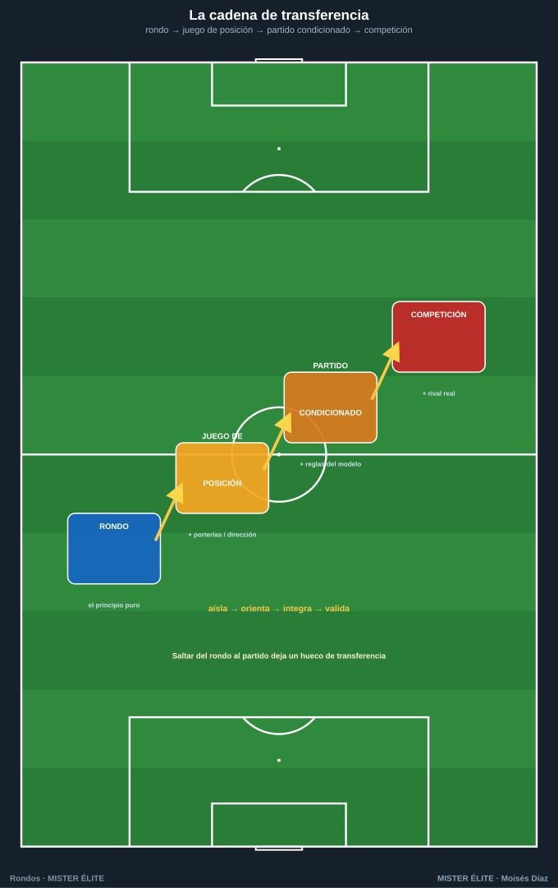
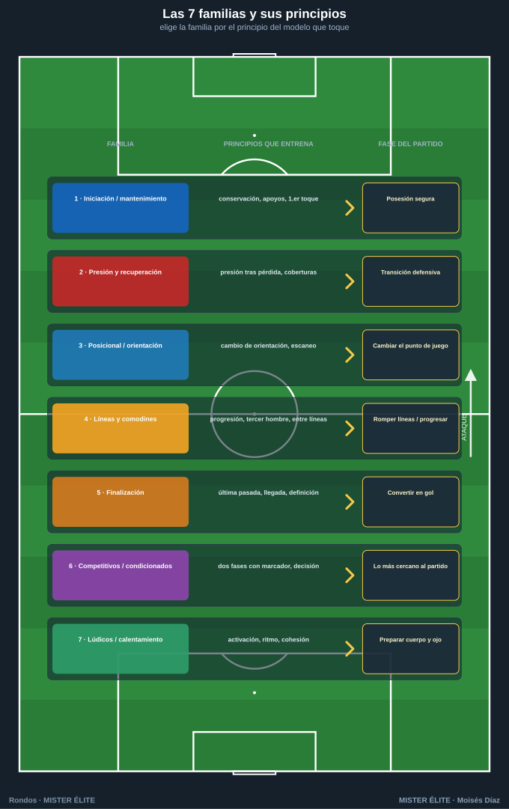
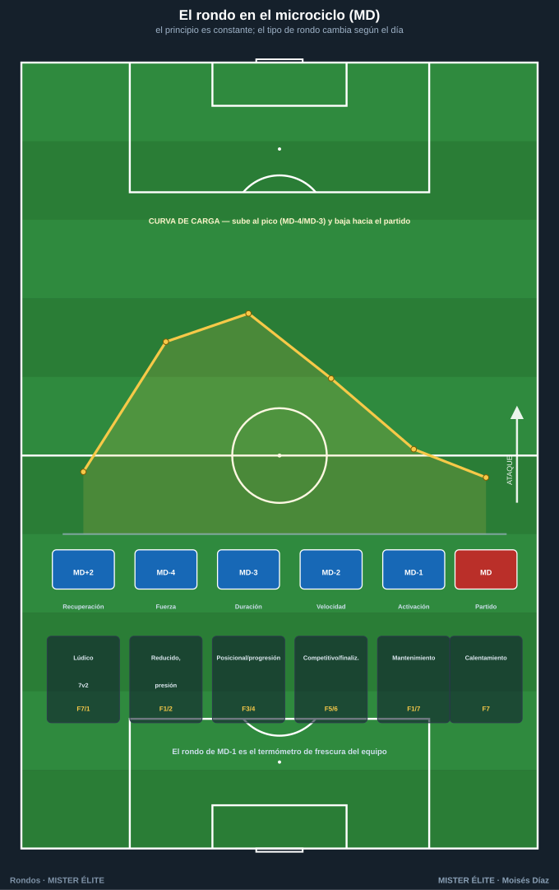

Módulo 03 · Del rondo al juego: la transferencia
Un rondo que no se parece a nada del partido es un ejercicio físico-técnico, no de entrenamiento del juego. La metodología moderna exige que cada tarea transfiera: que el jugador resuelva en el partido lo que ha repetido en la pizarra. Este módulo conecta el rondo con el modelo de juego.
1. La cadena de transferencia
El rondo es el primer escalón de una progresión que aumenta realismo y especificidad sin perder el principio que se entrena. Cada escalón añade una capa de la realidad del partido.
RONDO → JUEGO DE POSICIÓN → PARTIDO CONDICIONADO → COMPETICIÓN
(principio) (+ porterías/dirección) (+ reglas del modelo) (+ rival real)

| Escalón | Qué es | Qué añade | Qué entrena |
|---|---|---|---|
| 1. Rondo | Espacio cerrado, conservar/recuperar, sin dirección | El principio puro: superioridad, líneas de pase, primer toque, escaneo | El gesto y la decisión básica, alta densidad |
| 2. Juego de posición | Rondo con zonas, dirección y posiciones reconocibles | Orientación del campo, ocupación, relaciones por puestos | Jugar posicionado: ataque organizado, salida |
| 3. Partido condicionado | Juego real con reglas que provocan el comportamiento | Oposición real con objetivo, transiciones, finalización | El principio dentro del caos del partido |
| 4. Competición | El partido o el amistoso | El rival real, marcador, contexto emocional | Integrar todo bajo presión de competición |
Lectura clave: se sube de escalón cuando el principio aparece con solvencia en el anterior. El rondo aísla; el juego de posición orienta; el partido condicionado integra; la competición valida. Saltarse escalones (rondo → partido) deja un hueco de transferencia: el jugador conserva en círculo pero no sabe progresar hacia una portería.
2. Qué principios entrena cada familia de rondos
Cada una de las 7 familias del curso ataca un bloque de principios del juego. Esto permite elegir la familia según el principio del modelo que quieras entrenar esa semana.

| Familia | Principios que entrena | Conexión con el partido |
|---|---|---|
| 1. Iniciación / mantenimiento | Conservación, apoyos, líneas de pase, primer toque, paciencia | Posesión segura, construcción tranquila |
| 2. Presión y recuperación | Presión tras pérdida, coberturas, intensidad defensiva, recuperación colectiva | Transición defensiva, presión alta, robo y contra |
| 3. Posicional / orientación | Cambio de orientación, escaneo, jugar al lado libre, atraer-y-girar | Cambiar el punto de juego, salida bajo presión |
| 4. Con líneas y comodines | Progresión, superación de líneas, tercer hombre, juego entre líneas | Avanzar el balón, romper líneas, juego interior |
| 5. Finalización | Última pasada, llegada, definición, ataque del espacio | Convertir la posesión en gol |
| 6. Competitivos / condicionados | Las dos fases con marcador, decisión bajo presión, transiciones | Lo más cercano al partido: tensión real |
| 7. Lúdicos / calentamiento | Activación neuromuscular, ritmo, técnica bajo fatiga ligera, cohesión | Preparar el cuerpo y el "ojo" |
Síntesis: las familias 1 y 3 construyen la fase ofensiva con balón; la 2 la transición y defensa; la 4 la progresión; la 5 cierra con finalización; la 6 lo integra y la 7 lo activa.
3. Cómo encadenar rondos: sesión y microciclo
3.1 Dentro de una sesión
El rondo no va suelto: se encadena con la progresión de transferencia para dar hilo conductor a la sesión (un solo principio por sesión, atacado a creciente especificidad):
- Activación → rondo lúdico/mantenimiento de alta superioridad (familia 7 o 1).
- Rondo del principio del día → la familia que corresponda al objetivo (p. ej. orientación, familia 3).
- Juego de posición → el mismo principio con dirección y posiciones (escalón 2).
- Partido condicionado → el mismo principio en juego real (escalón 3).
Todo orbita el mismo principio: el jugador lo ve nacer en el rondo y lo resuelve en el partido.
3.2 A lo largo del microciclo (MD = matchday)
El microciclo semanal (periodización táctica) distribuye la carga y el foco táctico según la distancia al partido. El rondo se adapta a cada día: cambia su exigencia física, su densidad y la familia elegida.

| Día | Foco | Carga | Tipo de rondo recomendado |
|---|---|---|---|
| MD+1 / MD+2 | Recuperación / descarga | Baja | Lúdicos, alta superioridad (7v2), sin desgaste (familia 7/1) |
| MD-4 (fuerza) | Acciones cortas, muchos cambios de dirección | Alta (tensión) | Pequeños y rápidos, 1–2 toques, espacios reducidos, presión (familia 1/2) |
| MD-3 (duración) | Mayor volumen, más espacio | Alta (volumen) | Grandes, posicionales y de progresión, juego de posición (familia 3/4) |
| MD-2 (velocidad) | Acciones rápidas, finalización, transiciones | Media-alta | Competitivos cortos, finalización (familia 5/6) |
| MD-1 (activación) | Frescura, ritmo, confianza | Baja | Corto de mantenimiento a alta superioridad, técnico (familia 1/7) |
| MD (partido) | Competición | — | Rondo de calentamiento pre-partido (familia 7) |
Principios para encadenar el microciclo:
- Especificidad creciente y luego decreciente: la semana sube de exigencia desde MD+2 hasta el pico (MD-4/MD-3) y desciende hacia MD-1 para llegar fresco.
- El principio táctico se entrena toda la semana, pero el tipo de rondo cambia para repartir la carga.
- El rondo como termómetro: si en MD-1 el balón circula limpio y rápido, el equipo llega bien; si se atasca, hay fatiga residual.
Conclusión: el rondo deja de ser "el calentamiento" para ser una herramienta modulable que, bien elegida y ubicada, entrena el modelo de juego de lunes a domingo y conecta cada repetición con lo que pasará el día del partido.
Ideas clave
- La transferencia es una cadena: rondo → juego de posición → partido condicionado → competición. Cada peldaño añade realismo.
- El rondo aísla el principio; sube de escalón cuando aparece con solvencia. No saltes del rondo al partido directamente.
- Cada una de las 7 familias entrena un bloque concreto de principios: elige la familia por el principio del modelo que toque esa semana.
- Dentro de la sesión, encadena todo en torno a un único principio.
- En el microciclo, el principio es constante; el tipo de rondo cambia según el día (MD) para repartir la carga.
- Usa el rondo de MD-1 como termómetro de frescura del equipo.
Errores comunes
- Quedarse en el rondo básico sin progresar: se conserva en círculo pero no se sabe progresar a portería.
- Saltar de escalón sin que el principio esté consolidado (transferencia con huecos).
- Elegir la familia por gusto y no por el principio del modelo de la semana.
- Mezclar principios distintos en la misma sesión (se pierde el hilo conductor).
- Usar siempre el mismo tipo de rondo todos los días del microciclo, sin modular la carga según el MD.
MISTER ÉLITE — Moisés Díaz